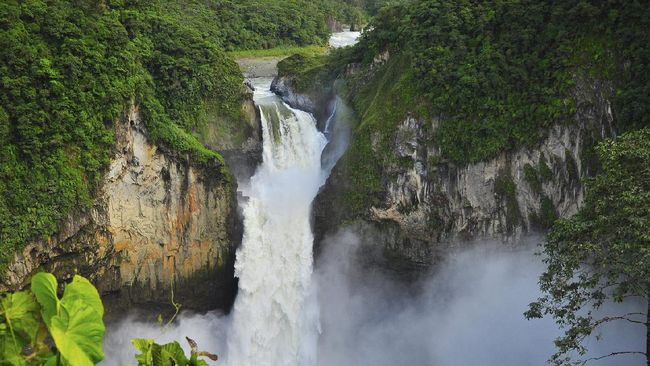

Air Terjun Ponot

Air terjun ponot merupakan air terjun tertinggi di Indonesia. Memiliki ketinggian kurang lebih 250 m dengan debit air yang sangat deras dan susunan air terjun yang bertingkat semakin menambah keindahannya. Di bawah air terjun terdapat bebatuan alam berukuran besar sebagai pelengkap keindahan. Pada beberapa waktu pengunjung dapat melihat ribuan kelelawar terbang di sekitar air terjun. Namun keberadaan kelelawar ini justru menambah keunikan fenomena alam objek wisata air terjun ini. Harga Tiket Masuk Air Terjun Rp10.000 untuk Tiket Masuk + Kendaraan Roda Dua Hari Biasa atau Hari Libur dan Akhir Pekan, Harga Tiket Masuk Air Terjun Rp20.000 untuk Tiket Masuk + Kendaraan Roda Empat Hari Biasa atau Hari Libur dan Akhir Pekan, yang berlokasi di Desa Tangga, Sampuran Siarimo, Halado, Pintu Pohan Merant, Asahan, Sumatera Utara, Indonesia , 21274 dan Jam Operasional Air Terjun Pengunjung dapat datang dan menikmati keindahan air terjun setiap hari Senin – Minggu 24 Jam. Rata-rata pengunjung menghabiskan sekitar satu jam untuk bermain air serta berswafoto disini.